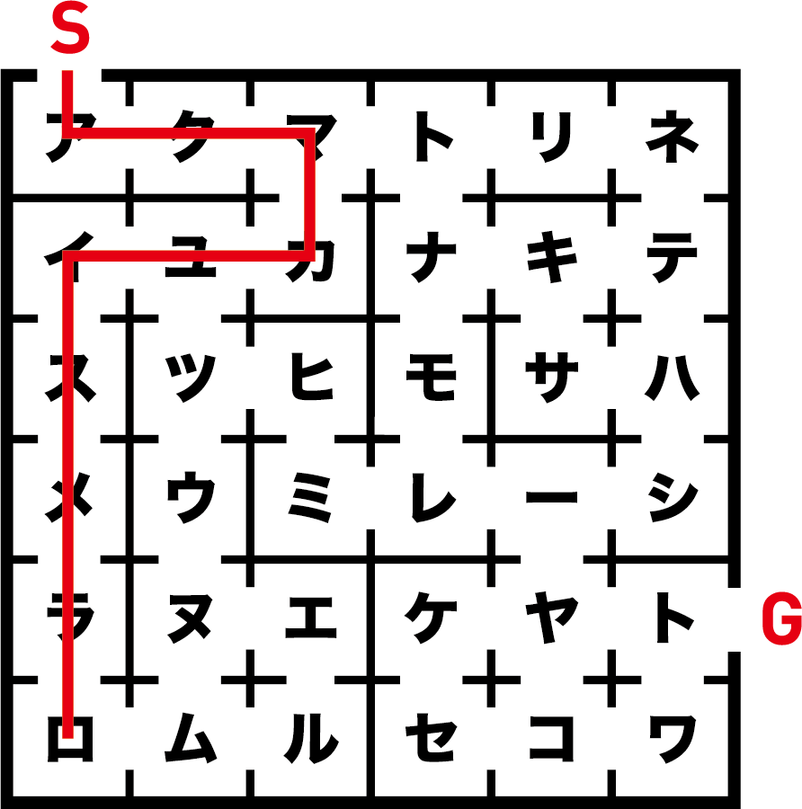
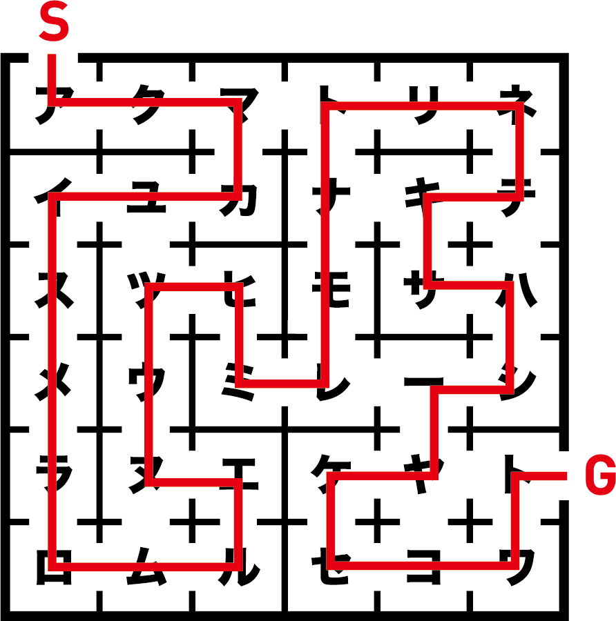
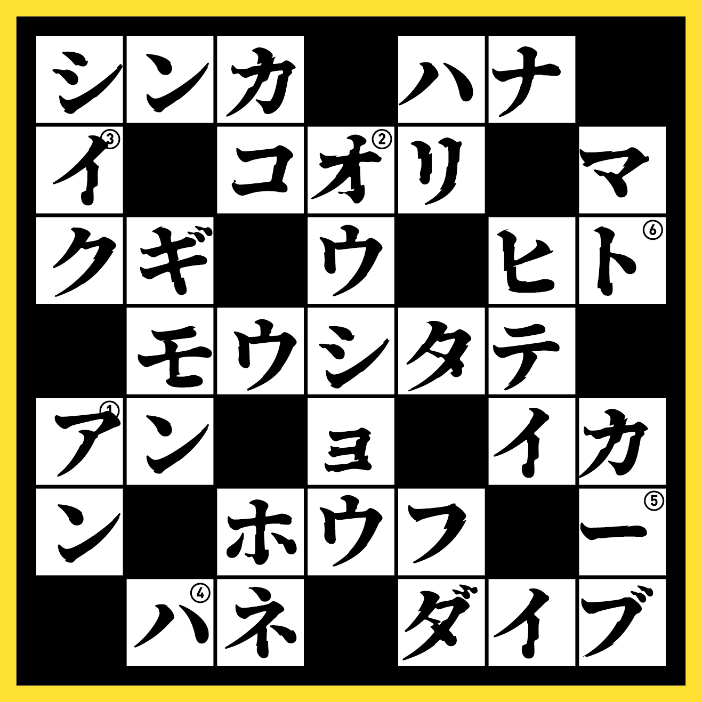
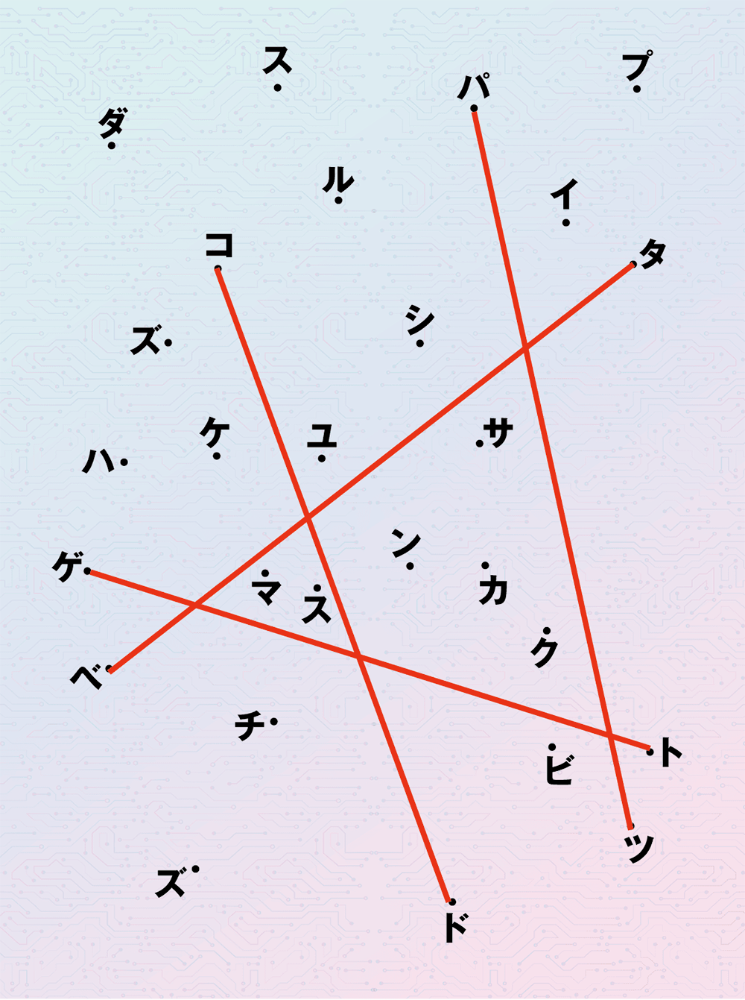

场馆地图会場マップ
在五层线上地图里寻找剧情中提到的记号。オンライン版のマップは全5階。物語に出てきた印を探してください。
地图录音地図の音声 1 · 1F
地图录音地図の音声 2 · 3F
4F 蓝色爱心对应正篇 2-2。4Fの青いハートは本編の2-2に対応します。
2F 梅花与 5F 黑桃的提示2Fのクラブ・5Fのスペードのヒント →第1章 · 1-1第１章 1st stepヒント
册子第3页 「叉号」 · 提示 1冊子3P「バツ」の問題のヒント1
把词填进框里，试着让整句话读通。文章が完成するように単語を埋めていこう
册子第3页 「叉号」 · 提示 2冊子3P「バツ」の問題のヒント2
红框填「えきしょう」，蓝框填「はうす」，黑框填「あぱーと」，绿框填「とまる」。依次取出①到④的字。赤い枠は「えきしょう」青い枠は「はうす」が入るようだ 黒い枠は「あぱーと」緑の枠は「とまる」が入るようだ ①〜④に入る文字を順番に拾ってみよう
册子第3页 「叉号」 · 提示 3（答案）冊子3P「バツ」の問題のヒント3/答え
答案是「エキスパート」。答えは「エキスパート」
册子第3页 「圆圈」 · 提示 1冊子3P「丸」の問題のヒント1
把每个提示让你联想到的词填进框里。それぞれ連想できる単語を枠の中に入れていこう
册子第3页 「圆圈」 · 提示 2冊子3P「丸」の問題のヒント2
戴在手腕上的是「ミサンガ」。把其余的框也填好，答案就在黑框里。腕につけるものは「ミサンガ」 他の枠も埋めてみよう。黒枠に入る単語が答え
册子第3页 「圆圈」 · 提示 3（答案）冊子3P「丸」の問題のヒント3/答え
答案是「ミサイル」。答えは「ミサイル」
册子第4页 「三角」 · 提示 1冊子4P「三角」の問題のヒント1
把各提示对应的英文用字母填入圆圈。それぞれ連想できる単語をアルファベットで○の中に入れて考えてみよう
册子第4页 「三角」 · 提示 2冊子4P「三角」の問題のヒント2
「イエス」的反义词是 NO，「オーマイゴット」缩写为 OMG，「オーケー」的反义词是 NG，倒过来的 6 是 NINE。取①到④的字母，读出四个片假名。「イエス」の対義語は「NO」 「オーマイゴット」の略は「OMG」 「オーケー」の対義語は「NG」 6を反対にした数字は「NINE」 ○がうまったら①〜④に入るアルファベットを拾い、カタカナ4文字の答えを導こう
册子第4页 「三角」 · 提示 3（答案）冊子4P「三角」の問題のヒント3/答え
答案是「コサイン」。答えは「コサイン」
册子第4页 「六边形」 · 提示 1冊子4P「六角形」の問題のヒント1
走遍迷宫里的每个房间。第一个岔路口先向下走。すべての部屋を必ず通るように迷路を進んでいこう 最初の分かれ道は下に進んでみよう
册子第4页 「六边形」 · 提示 2冊子4P「六角形」の問題のヒント2
前半段可以照图走。途中まではこのルートで進んでみよう

册子第4页 「六边形」 · 提示 3冊子4P「六角形」の問題のヒント3
按图走遍所有房间，每经过六个房间取一个字。第一个字是「イ」。全部通るにはこのルートで進めるようだ 通った部屋を6の倍数のごとに文字を拾ってみよう 最初の文字は「イ」

册子第4页 「六边形」 · 提示 4（答案）冊子4P「六角形」の問題のヒント4/答え
答案是「イルミネート」。答えは「イルミネート」
册子第5页 「四边形」 · 提示 1冊子5P「四角」の問題のヒント1
每次用两个汉字，想想方框里能组成什么词。漢字2文字ずつ使って四角に入る単語を考えてみよう
册子第5页 「四边形」 · 提示 2冊子5P「四角」の問題のヒント2
第一格填「放課後」。最初の四角に入る単語は「放課後」
册子第5页 「四边形」 · 提示 3冊子5P「四角」の問題のヒント3
最后一格填「下校」。全部填好后，①到④拼出「ほうがく」。最後の四角に入る単号は「下校」 すべての四角を埋めると①〜④に入る単語は「ほうがく」になる
册子第5页 「四边形」 · 提示 4（答案）冊子5P「四角」の問題のヒント4/答え
答案是「コンパス」。答えは「コンパス」
册子第5页 「菱形」 · 提示 1冊子5P「菱形」の問題のヒント1
先在框里填数字。「积」是两个数相乘的结果。枠の中に数字を書き込んで考えてみよう。ちなみに積とは掛け算をしたときの答えだ
册子第5页 「菱形」 · 提示 2冊子5P「菱形」の問題のヒント2
第一框填 2 和 3，和是 5。想想 5 还能怎么念。最初の枠には2・3が入ると合計は「5」のようだ 5の言い方を考えてみよう
册子第5页 「菱形」 · 提示 3冊子5P「菱形」の問題のヒント3
圆圈里填的是数字的英文。填好后，取出红箭头经过的字母。丸の中には数字の英語が入るようだ すべてに丸に文字を入れて赤い矢印上にある文字を拾ってみよう
册子第5页 「菱形」 · 提示 4（答案）冊子5P「菱形」の問題のヒント4/答え
答案是「イーストキン」。答えは「イーストキン」
册子第6页 「记忆数据1」 · 提示 1冊子6P「記憶データ1」の問題のヒント1
把前面得到的各个答案沿箭头填进白圈。それぞれの答えを白い丸に矢印に沿って埋めていこう
册子第6页 「记忆数据1」 · 提示 2冊子6P「記憶データ1」の問題のヒント2
最下方的六边形填「イーストキン」。1番下の六角形には「イーストキン」が入るようだ
册子第6页 「记忆数据1」 · 提示 3冊子6P「記憶データ1」の問題のヒント3
最上方的六边形填「コサイン」。填满后，按箭头顺序读中央六边形。1番上の六角形には「コサイン」が入るようだ すべての丸が埋まったら、真ん中の六角形を矢印の順に読もう
册子第6页 「记忆数据1」 · 提示 4（答案）冊子6P「記憶データ1」の問題のヒント4/答え
答案是「インストール」。答えは「インストール」
第1章 · 1-2第１章 2nd stepヒント
册子第7页 三个图形的合成方法提示 1冊子7P 3つの図形をどう作ればいいか分からないヒント1
回想一下，刚才哪里有可以点选的东西？タップできるものがどこかになかったか探してみよう
册子第7页 三个图形的合成方法提示 2（答案）冊子7P 3つの図形をどう作ればいいか分からないヒント2/答え
屏幕上的题也各带一个标记。要拼出最左边的标记，试着依次点选「丸」和「バツ」两张题卡。液晶画面の中の問題にもそれぞれマークが付いていたはずだ。 1番左のマークは「丸」と「バツ」の問題をタップする事で作れそうだ。 実際に画面上で問題を2枚タップしてみよう
册子第7页 「最左标记」 · 提示 1冊子7P「1番左のマーク」の問題のヒント1
点选圆圈和叉号后会出现一道新题。先解这道题。「丸」と「バツ」の問題をタップする事で新しい問題が表示されたはずだ 現れた問題を解いてみよう
册子第7页 「最左标记」 · 提示 2冊子7P「1番左のマーク」の問題のヒント2
红框是「腕章」，蓝框是「ハウツー」。看看这两个词遵循什么规律。赤い枠に入る言葉は「腕章」 青い枠に入る言葉は「ハウツー」のようだ 法則がないか考えてみよう
册子第7页 「最左标记」 · 提示 3冊子7P「1番左のマーク」の問題のヒント3
①到④中似乎依次藏着数字的英语读音。试着填出黑框里的词。①〜④の数字にはそれぞれ英語の「数字」が順番に入っているようだ。 黒い枠に入る言葉を考えてみよう
册子第7页 「最左标记」 · 提示 4（答案）冊子7P「1番左のマーク」の問題のヒント4/答え
答案是「アスリート」。答えは「アスリート」
册子第7页 「中央标记」 · 提示 1冊子7P「真ん中のマーク」の問題のヒント1
点选六边形和三角形，会出现另一道题。「六角形」と「三角」の問題をタップする事で新しい問題が表示されたはずだ 現れた問題を解いてみよう
册子第7页 「中央标记」 · 提示 2冊子7P「真ん中のマーク」の問題のヒント2
英文字母表里序号是 6 的倍数的字母有 F、L、R、X。想想怎样把它们写进白圈。アルファベット順に並べたときの6の倍数番目の文字... 「F」「L」「R」「X」を白い丸にどうにかして埋めてみよう
册子第7页 「中央标记」 · 提示 3冊子7P「真ん中のマーク」の問題のヒント3
这里填字母的日语读音。最右边是「アール」。填好后读①到④。それぞれ「アルファベットの読み方」で埋める事ができそうだ。 1番右は「アール」が入りそうだ。全て埋めて①〜④を読んでみよう
册子第7页 「中央标记」 · 提示 4（答案）冊子7P「真ん中のマーク」の問題のヒント4/答え
答案是「アックス」。答えは「アックス」
册子第7页 「最右标记」 · 提示 1冊子7P「1番右のマーク」の問題のヒント1
点选四边形和菱形，会出现一道新题。「四角」と「菱形」の問題をタップする事で新しい問題が表示されたはずだ 現れた問題を解いてみよう
册子第7页 「最右标记」 · 提示 2冊子7P「1番右のマーク」の問題のヒント2
上面的数字对应下面的汉字。试着用手写一遍这些字。上の数字と下の漢字がそれぞれ対応しているようだ。漢字を書く時に思い浮かべる事を考えてみよう
册子第7页 「最右标记」 · 提示 3冊子7P「1番右のマーク」の問題のヒント3
数字指要保留的笔画。比如「下」只取第二、三画，就像片假名「ト」。其他字也这样取。数字はそれぞれの漢字から拾う画数を表している下という漢字を書く時の2番目3番目だけを考えるとカタカナの「ト」になる。 同様に他の漢字も拾う部位を考えてみよう
册子第7页 「最右标记」 · 提示 4（答案）冊子7P「1番右のマーク」の問題のヒント4/答え
答案是「トリック」。答えは「トリック」
册子第7页 「记忆数据2」 · 提示 1冊子7P「記憶データ2」の問題のヒント1
把刚得到的三个答案分别填入白框。それぞれ解いた3つの問題の答えを白い枠に埋めてみよう
册子第7页 「记忆数据2」 · 提示 2冊子7P「記憶データ2」の問題のヒント2
上面填「アスリート」。沿红箭头逐字填好，再沿红箭头读出问号周围的字。1番上は「アスリート」が入るようだ 赤い矢印に沿ってそれぞれ文字を入れていこう すべて埋まったら？の周りの文字を赤い矢印に沿って読もう
册子第7页 「记忆数据2」 · 提示 3（答案）冊子7P「記憶データ2」の問題のヒント3/答え
答案是「クリス」。答えは「クリス」
第1章 · 1-3第１章 Last stepヒント
册子第8页 「DELETE模式」的操作提示 1冊子8P「DELETEモード」で何をすれば良いのかわからないヒント1
DELETE 模式能删除不需要的要素。找一找，题目上多了什么？デリートモードを使用する事で不要な要素を削除する事ができるようだ この機能を使って不要なものを排除してみよう
册子第8页 「DELETE模式」的操作提示 2（答案）冊子8P「DELETEモード」で何をすれば良いのかわからないヒント2/答え
先处理干扰题目的噪声。进入 DELETE，依次点「ノ」「イ」「ズ」，移除它们后就能看到谜面。問題に「ノイズ」がかかっているようなので最初に「ノイズ」を排除してみよう デリートモードで「ノ」「イ」「ズ」をタップして排除する事で謎が現れる
「ノイズ」 · 提示 1「ノイズ」の問題のヒント1
每种颜色的箭头都有自己的规则。比较箭头前后的词。矢印にはそれぞれ法則があるようだ 文字の変化を見て考えてみよう
「ノイズ」 · 提示 2「ノイズ」の問題のヒント2
绿箭头互换中间和最后一个字，紫箭头互换第一个和最后一个字。緑の矢印は真ん中と最後の文字を入れ替える指示のようだ 紫の矢印は最初と最後の文字を入れ替える指示のようだ
「ノイズ」 · 提示 3「ノイズ」の問題のヒント3
蓝箭头把红线标出的假名换成五十音里的下一个。想想刚才想消掉的是什么。青の矢印は赤線の文字を五十音の次の文字にする指示のようだ いま消したいものがなにかを思い出して謎を解いていこう
「ノイズ」 · 提示 4「ノイズ」の問題のヒント4
要消掉的词是「ノイズ」。它经过紫箭头会变成什么？いま消したいのは「ノイズ」 紫の矢印で変換するとなにになるか考えてみよう
「ノイズ」 · 提示 5「ノイズ」の問題のヒント5
经过紫箭头得「ズイノ」，再经过绿箭头得「ズノイ」。把红线上的「イ」按蓝箭头变换。紫の矢印で変換すると「ズイノ」になる 次に緑の矢印で変換すると「ズノイ」になる 次に赤線の「イ」が青の矢印で変換するとなにになるか考えてみよう
「ノイズ」 · 提示 6（答案）「ノイズ」の問題のヒント6/答え
答案是「ズノウ」。答えは「ズノウ」
「ハウリング」 · 提示 1「ハウリング」の問題のヒント1
题目还受到啸叫干扰。进入 DELETE，点选「ハ」「ウ」「リ」「ン」「グ」，就能看到下一道题。問題に「ハウリング」がかかっているようなので デリートモードで「ハ」「ウ」「リ」「ン」「グ」をタップして排除する事で謎が現れる
「ハウリング」 · 提示 2「ハウリング」の問題のヒント2
把刚删掉的「ハウリング」逐字填入①到⑤。移动圆环，看看能从环孔里读到什么。いま消したものは「ハウリング」①〜⑤にはハウリングの1文字ずつが入るようだ スライドして「リング」の「穴」から見えるものを探してみよう
「ハウリング」 · 提示 3「ハウリング」の問題のヒント3
把环拖到红色剪影处。字母会浮现出来，请从上到下逐一读出。実際に画面上のリングを動かして赤いシルエットに合わせてみよう アルファベットが浮かび上がってくるはずだ、1文字ずつ上から文字をよんでいこう
「ハウリング」 · 提示 4（答案）「ハウリング」の問題のヒント4/答え
答案是「NEXT」。答えは「NEXT」
「记忆数据口令3」 · 提示 1「記憶データパスワード3」の問題のヒント1
把此前的答案填进方框，先求出①到④。遇到音画不同步，可查看资料册中的「齿轮录像」。四角の中には今まで解いた答えが入りそうだ まずは①~④に入る言葉を導き出そう ※推奨機種環境でない場合、音声や動画にずれが生じてしまう可能性がございます。 推奨環境の確認は こちら をご参照ください。 ※推奨機種環境を満たしても歯車の挙動が安定しない場合は、ヒントに掲載の「歯車動画（AR）の挙動が安定しないとき」をご参照ください。
「记忆数据口令3」 · 提示 2「記憶データパスワード3」の問題のヒント2
①到④拼出「すずのね」，即铃声。打开声音，仔细听。①~④に入る言葉は「すずのね」のようだ 画面の音をよく聞いてみよう ※マナーモードの場合は音声が流れるようにしてみよう
「记忆数据口令3」 · 提示 3「記憶データパスワード3」の問題のヒント3
齿轮在定期转动。转到某个位置时，你听见了什么？画面上を見ると、歯車が定期的に回っている事がわかる ある、一定の場所になった時に、なにか音が聞こえないだろうか
「记忆数据口令3」 · 提示 4「記憶データパスワード3」の問題のヒント4
齿轮上刻有希腊字母，包括 Δ。Δ 转到正下方时，铃声刚好响起。歯車にはそれぞれ、ギリシャ文字が彫られていてΔ(デルタ)も描かれているようだ この部分が下に来ている時にちょうど「鈴の音」が聞こえているようだ
「记忆数据口令3」 · 提示 5「記憶データパスワード3」の問題のヒント5
看「▽」尖端指着的字。依次读出，就能得到四个字的口令。「▽」の先が文字を示しているようだ 車輪の先の文字をみてみよう、4文字のパスワードを導く事ができそうだ
「记忆数据口令3」 · 提示 6（答案）「記憶データパスワード3」の問題のヒント6/答え
答案是「ワールド」。答えは「ワールド」
齿轮录像歯車動画（AR）の挙動が 安定しないとき
「齿轮录像」「歯車動画」はこちら
播放齿轮录像，留意每一次铃声响起时指针的位置。
第2章 · 2-1第２章 1st stepヒント
册子第11页 「填字」 · 提示 1冊子11P「クロスワード」の問題のヒント1
打开地图，在标记地点听两段录音，记下填字题的线索。可在本页的地图区重播录音。まずは地図を確認しヒントのある場所に向かおう 向かった際に二次元コードが記載されているパネルがあるはずだ それを読み込んで音声情報を冊子にメモしていこう
册子第11页 「填字」 · 提示 2冊子11P「クロスワード」の問題のヒント2
横向线索为「シンカ」「コオリ」「ホウフ」「ダイブ」「モウシタテ」。ヨコのカギは シンカ コオリ ホウフ ダイブ モウシタテ
册子第11页 「填字」 · 提示 3冊子11P「クロスワード」の問題のヒント3
纵向线索为「シイク」「ギモン」「ヒテイ」「カーブ」「オウショウ」。タテのカギは シイク ギモン ヒテイ カーブ オウショウ
册子第11页 「填字」 · 提示 4冊子11P「クロスワード」の問題のヒント4
把这些词填入格中。先写「モウシタテ」与「オウショウ」会容易一些。それぞれの単語をクロスワードに入れていこう 「モウシタテ」と「オウショウ」から書き込んでいくとわかりやすいぞ
册子第11页 「填字」 · 提示 5冊子11P「クロスワード」の問題のヒント5
完成后的填字图如下。按①到⑥取字，找出口令指向的位置。それぞれの単語をいれていくとこのようになる ①〜⑥に書かれている文字を拾ってパスワードのありかを導き出そう

册子第11页 「填字」 · 提示 6（答案）冊子11P「クロスワード」の問題のヒント6/答え
答案是「アオイハート」。在地图上前往蓝色爱心处，从那里进入下一场。答えは「アオイハート」 ※地図から「青いハート」の場所に行き、そこにある機械に表示される二次元コードを読み込もう
第2章 · 2-2第２章 2nd stepヒント
册子第14页 「梅花」 · 提示 1冊子14P「クラブ」の問題のヒント1
找到地图上的梅花标记，观察剪影里的影像。指定された場所に行き、シルエットに流れている映像をよくみてみよう
册子第14页 「梅花」 · 提示 2冊子14P「クラブ」の問題のヒント2
各色光点会轮流慢慢移动。一次只盯一种颜色，看它划出的轨迹。流れている映像の中をよくみてみると、定期的に各色がゆっくり動いているのがわかる 一色ずつ動く軌道をみてみよう
册子第14页 「梅花」 · 提示 3冊子14P「クラブ」の問題のヒント3
每条轨迹都在写一个英文字母。红光画出的是 W。拼出四个字母的单词。軌道はアルファベットの1文字を表しているようだ 赤色の光の軌道は「W」のようだ すべての軌道を拾って4文字の言葉を導こう
册子第14页 「梅花」 · 提示 4（答案）冊子14P「クラブ」の問題のヒント4/答え
答案是「WING（ウイング）」。答えは「WING（ウイング）」
册子第14页 「黑桃」 · 提示 1冊子14P「スペード」の問題のヒント1
找到黑桃标记，观察剪影里的影像。指定された場所に行き、シルエットに流れている映像をよくみてみよう
册子第14页 「黑桃」 · 提示 2冊子14P「スペード」の問題のヒント2
画面中会亮起由小正方形组成的图案。册子上哪里也有同样排列的方格？流れている映像の中をよくみてみると、正方形で形成された模様が表示されている事がわかる これと同じような正方形で構成されたものを、冊子のどこかでみた事がないだろうか
册子第14页 「黑桃」 · 提示 3冊子14P「スペード」の問題のヒント3
方格和册子第 11 页填字图中的白格一致。按亮起的顺序，逐一读取格中的字。映像と冊子11Pの白マス部分で形成された部分の配置が同じようだ 光っている場所の文字を1文字ずつ拾っていこう
册子第14页 「黑桃」 · 提示 4（答案）冊子14P「スペード」の問題のヒント4/答え
答案是「はかせ」。答えは「はかせ」
记忆数据口令4 · 提示 1記憶データパスワード4問題のヒント1
把梅花与黑桃两道题的答案填进答题框。先ほど解いた「クラブ」と「スペード」の問題の答えを参考に解答枠を埋めてみよう
记忆数据口令4 · 提示 2記憶データパスワード4問題のヒント2
部分字格标着 1 到 4，依次抄出里面的字。解答枠をよくみると、書き込んだ答えの文字枠に「1~4」数字がふられているようだ 該当する文字を順番に書き込んでみよう
记忆数据口令4 · 提示 3（答案）記憶データパスワード4問題のヒント3/答え
答案是「せかいせん」。答えは「せかいせん」
第2章 · 2-3第２章 Last stepヒント
册子第15页 「记忆数据5口令1/2」 · 提示 1冊子15P「記憶データ5パスワード1/2」の問題のヒント1
试着用框里的片假名组成「ベータ」「ゲート」「コード」「パーツ」。枠の中にあるカタカタから「ベータ」「ゲート」「コード」「パーツ」という言葉が作ることができないか考えてみよう
册子第15页 「记忆数据5口令1/2」 · 提示 2冊子15P「記憶データ5パスワード1/2」の問題のヒント2
可以找到「ベ」和「タ」。中间的长音符号「ー」要怎么写出来？「ベータ」に必要な「ベ」「タ」の文字がある事がわかる「ー」はどうすれば作ることができるか考えてみよう
册子第15页 「记忆数据5口令1/2」 · 提示 3冊子15P「記憶データ5パスワード1/2」の問題のヒント3
用铅笔把「ベ」与「タ」连成线，这条线就是「ー」。其他几个词也照此处理。鉛筆で「ベ」から「タ」までを線で繋げることで「ー」を作ることができるはずだ 同じように他の言葉も作り出してみよう
册子第15页 「记忆数据5口令1/2」 · 提示 4（答案）冊子15P「記憶データ5パスワード1/2」の問題のヒント4/答え
图中给出完整的连线方式。実際にこのように作り出すことができる

册子第15页 「记忆数据5口令2/2」 · 提示 1冊子15P「記憶データ5パスワード2/2」の問題のヒント1
看上一题画出的线，把目光放在线围住的字上。先ほど解いた記憶データ5パスワード1/2で囲われた文字をよくみてみよう
册子第15页 「记忆数据5口令2/2」 · 提示 2冊子15P「記憶データ5パスワード2/2」の問題のヒント2
画好的线围成三角形与四边形，分别读出里面的字。よくみると書き込んだ線で「四角形」と「三角形」を作れたはずだ その内側にある文字をひろってみよう
册子第15页 「记忆数据5口令2/2」 · 提示 3冊子15P「記憶データ5パスワード2/2」の問題のヒント3
四边形内是「サンカク」，三角形内是「マス」。それぞれ、四角形の内側の文字は「サンカク」三角形の内側の文字は「マス」という文字が入るようだ
册子第15页 「记忆数据5口令2/2」 · 提示 4冊子15P「記憶データ5パスワード2/2」の問題のヒント4
填完后的指示是：涂满所有「サンカク」的「マス」，但写有「サンカク」这几个字的「マス」自身不能涂黑。空欄を埋めると 「サンカク」の「マス」全て塗りつぶせ ただし「サンカク」の文字自体が入った「マス」は塗り潰さない という指示が現れる
册子第15页 「记忆数据5口令2/2」 · 提示 5冊子15P「記憶データ5パスワード2/2」の問題のヒント5
想想此前在册子哪里见过「マス」。也可寻找与此题边框相同的花纹。「マス」という言葉をこれまでの冊子のどこかで1度だけ見たことはないだろうか この問題の枠と同じような模様のものを冊子内で探してみよう
册子第15页 「记忆数据5口令2/2」 · 提示 6冊子15P「記憶データ5パスワード2/2」の問題のヒント6
册子第 11 页用「マス」表示填字格。那里的「サンカク」会不会还有另一种写法？マスという言葉は冊子11Pでクロスワードのマスを指し示す場面でしか使用されていないようだ 「サンカク」のクロスワードの「マス」を塗りつぶすとはどういうことだろう サンカクを別の言葉に変換してみよう
册子第15页 「记忆数据5口令2/2」 · 提示 7冊子15P「記憶データ5パスワード2/2」の問題のヒント7
将「サンカク」读作「三画」，即三个笔画。サンカクとは「3画」＝「画数」 つまり画数を表している
册子第15页 「记忆数据5口令2/2」 · 提示 8冊子15P「記憶データ5パスワード2/2」の問題のヒント8
在填字格里找出三画的片假名并涂黑，但跳过写着「サ」「ン」「カ」「ク」的格子。クロスワードはすべて「カタカナ」で文字を書き込んだはずだ 書き込んだカタカタで3画で書いた文字を塗りつぶしていこう ただし「サ」「ン」「カ」「ク」のマスは塗りつぶさないように注意しよう
册子第15页 「记忆数据5口令2/2」 · 提示 9（答案）冊子15P「記憶データ5パスワード2/2」の問題のヒント9/答え
将相应位置涂黑后，会得到左右对称的图案。请对照填字图按笔画选格，再按确定。注意纸面与格子编号的观察方向。実際にクロスワードで該当の場所を塗りつぶしたら左右対称の模様になる 冊子上の二次元コードからクロスワードを読み取ってみよう(ズレが気になる場合は位置リセットボタンをタップして試してみよう) ※クロスワードパズルを読み取った後、スマホ上で塗りつぶしたマスと同じマスを選択し、確定することでストーリーが進みます。
第3章 · 暗号片与部件第３章 ヒント
册子第21页 「记忆数据6口令1/3A」 · 提示 1冊子21P「記憶データ6パスワード1/3A」の問題のヒント1
取出暗号片，依指示与解读片叠在一起。「暗号シート」を取り出し、指示通りに「解読シート」に重ねてみよう
册子第21页 「记忆数据6口令1/3A」 · 提示 2冊子21P「記憶データ6パスワード1/3A」の問題のヒント2
把 A 对准三角形。此时六边形、四边形、圆形分别显示「やま」「すりー」「たいよう」。想想三个词能共同指向哪种读音，把它写入问号。三角形にAという文字を当てはめると、それぞれ六角形からは「やま」四角からは「すりー」丸からは「たいよう」という文字が出てくる。ここから連想される言葉を？？に埋めよう
册子第21页 「记忆数据6口令1/3A」 · 提示 3冊子21P「記憶データ6パスワード1/3A」の問題のヒント3
问号处填「さん」。把黑色的「さん」对准六边形，这时从四边形读出答案。？？に入るのは「さん」。黒い「さん」を六角形に当てはめたとき、四角から出てくる言葉が答えだ
册子第21页 「记忆数据6口令1/3A」 · 提示 4（答案）冊子21P「記憶データ6パスワード1/3A」の問題のヒント4/答え
答案是「ようび」。答えは「ようび」
册子第21页 「记忆数据6口令1/3B」 · 提示 1冊子21P「記憶データ6パスワード1/3B」の問題のヒント1
取出暗号片，依指示与解读片叠在一起。「暗号シート」を取り出し、指示通りに「解読シート」に重ねてみよう
册子第21页 「记忆数据6口令1/3B」 · 提示 2冊子21P「記憶データ6パスワード1/3B」の問題のヒント2
把 B 对准三角形。六边形、四边形、圆形依次显示「らぶ」「まなこ」「わたくし」。写下三者共同指向的读音。三角形にBという文字を当てはめると、それぞれ六角形からは「らぶ」四角からは「まなこ」丸からは「わたくし」という文字が出てくる。ここから連想される言葉を？？に埋めよう
册子第21页 「记忆数据6口令1/3B」 · 提示 3冊子21P「記憶データ6パスワード1/3B」の問題のヒント3
问号处填「あい」。把黑色的「あい」对准六边形，从四边形中读取答案。？？に入るのは「あい」。黒い「あい」を六角形に当てはめたとき、四角から出てくる言葉が答えだ
册子第21页 「记忆数据6口令1/3B」 · 提示 4（答案）冊子21P「記憶データ6パスワード1/3B」の問題のヒント4/答え
答案是「くだもの」。答えは「くだもの」
册子第22页 「记忆数据6口令2/3」 · 提示 1冊子22P「記憶データ6パスワード2/3」の問題のヒント1
先把第 21 页求出的 A、B 两个答案填进去。P21で求めたAとBの答えをそれぞれ埋めてから実行してみよう
册子第22页 「记忆数据6口令2/3」 · 提示 2冊子22P「記憶データ6パスワード2/3」の問題のヒント2
移动暗号片，让六边形露出红色的星期，四边形同时露出红色的水果。看看圆形里出现了什么。六角形から赤文字の曜日が・四角から赤文字の果物が同時に見えるように配置しよう。配置し終わったら丸から見える文字を確認して冊子の指示に従おう
册子第22页 「记忆数据6口令2/3」 · 提示 3冊子22P「記憶データ6パスワード2/3」の問題のヒント3
在电子世界里选中组成该汉字的全部部件，再按「确定部首」，即可看到半张线索图。丸から見えた漢字を構成するパーツを、電子世界で全てタップして、再生マークを押そう。手がかりが半分手に入るはずだ
册子第22页 「记忆数据6口令2/3」 · 提示 4冊子22P「記憶データ6パスワード2/3」の問題のヒント4
后续需要全部线索。仔细看，「記憶データ6パスワード2/3」的文字与边框似乎也各有两层。どうやら次の段階に進むには手がかりが「全て」必要なようだ。よく見ると記憶データ6パスワード2/3の文字や枠部分も2つ重なっているように見える
册子第22页 「记忆数据6口令2/3」 · 提示 5冊子22P「記憶データ6パスワード2/3」の問題のヒント5
还有另一种能让星期和水果同时出现在对应窗口的叠法。试着移动或转动暗号片。記憶データ6パスワード2/3の文字や枠部分も2つ重なっていることから、もう一通り重ね方がないか試してみよう。つまり、「六角形から赤文字の曜日が・四角から赤文字の果物が同時に見える」重ね方が、もう一通りあるはずだ。試行錯誤しよう
册子第22页 「记忆数据6口令2/3」 · 提示 6冊子22P「記憶データ6パスワード2/3」の問題のヒント6
六边形里显示的红字有两种可能：「もく」或「げつ」。2通りの重ね方について、曜日はそれぞれ赤文字の「もく」もしくは「げつ」が六角形から見えるようにすること
册子第22页 「记忆数据6口令2/3」 · 提示 7冊子22P「記憶データ6パスワード2/3」の問題のヒント7
对应的红字水果是「みかん」或「りんご」。记下两种叠法从圆形里读到的汉字。2通りの重ね方について、果物はそれぞれ赤文字の「みかん」もしくは「りんご」が六角形から見えるようにすること。このとき丸から見える漢字を確認しよう
册子第22页 「记忆数据6口令2/3」 · 提示 8（答案）冊子22P「記憶データ6パスワード2/3」の問題のヒント8/答え
「もく」配「みかん」得到「侍」，「げつ」配「りんご」得到「湖」。选中亻、土、寸后按「确定部首」，再选中氵、十、口、月并确认，即可集齐左右两半线索图。「もく」「みかん」と重ねることで「侍」、「げつ」「りんご」と重ねることで「湖」という漢字が丸の中に現れた。電子世界にて「人偏・土・寸」「さんずい・十・口・月」を選んで再生マークを押すと手がかりが2つ全て手に入った
册子第22页 「记忆数据6口令3/3」 · 提示 1冊子22P「記憶データ6パスワード3/3」の問題のヒント1
将刚拼好的线索抄入❶到❸。先ほど完成した手がかりをもとに解き明かそう。まずは手がかりを❶~❸に書き写そう
册子第22页 「记忆数据6口令3/3」 · 提示 2冊子22P「記憶データ6パスワード3/3」の問題のヒント2
记住右边的插图，按第 3/3 部分的指示行动。書き写し終わったら、手がかり右に描かれていたイラストを念頭において、3/3に書かれた指示を実行しよう
册子第22页 「记忆数据6口令3/3」 · 提示 3冊子22P「記憶データ6パスワード3/3」の問題のヒント3
留意横排的三行指示。你需要让不同窗口分别露出同一幅图的三种说法。指示文が横3列になっている部分がある。どうやらイラストの言葉を表す言葉3通りを、それぞれのマークから見えるようにする必要があるようだ
册子第22页 「记忆数据6口令3/3」 · 提示 4冊子22P「記憶データ6パスワード3/3」の問題のヒント4
这幅图可以读作「たつ」「りゅう」「ドラゴン」。右のイラストはそれぞれ「たつ」「りゅう」「ドラゴン」と表すことができる
册子第22页 「记忆数据6口令3/3」 · 提示 5冊子22P「記憶データ6パスワード3/3」の問題のヒント5
将暗号片分别摆放三次，使这三种说法从对应标记露出，每次记下三角形里的一个字。それぞれが指定されたマークから見えるように3回「暗号シート」を置いてみよう。そしてそのときに三角の中から見える文字(合計3文字)を確認しよう
册子第22页 「记忆数据6口令3/3」 · 提示 6冊子22P「記憶データ6パスワード3/3」の問題のヒント6
三个字是「す」「た」「ー」。仔细读册子上的指示。三角形から覗く文字は「す」「た」「ー」だ。冊子に書かれた指示を注意深く読んで、実行しよう
册子第22页 「记忆数据6口令3/3」 · 提示 7冊子22P「記憶データ6パスワード3/3」の問題のヒント7
通过第 22 页下方的入口进入电子世界。观察「スター」内全部部件，组合成两个汉字。P22下にある二次元コードから電子世界に行き、「スター」の中のパーツを全て確認して組み合わせよう。答えは漢字2文字
册子第22页 「记忆数据6口令3/3」 · 提示 8（答案）冊子22P「記憶データ6パスワード3/3」の問題のヒント8/答え
答案是「失敗」。将它输入电子世界的答题框。答えは「失敗」。電子世界の解答入力欄に記入しよう
最终章最終章 ヒント
守护此世的巨蟹作战 · 提示 1オペレーションカルキノスで、何をしていいのか分からない1
要拯救这个世界，必须抹去冈部伦太郎的存在。他是一组记忆数据。你在哪里用过删除数据的功能？この世界を救うには岡部倫太郎という存在を消す他ない。記憶データの集合である岡部倫太郎を消す方法は、どこかになかっただろうか
守护此世的巨蟹作战 · 提示 2オペレーションカルキノスで、何をしていいのか分からない2
之前曾经删过什么多余的数据？翻看此前章节的记录。何か不要なデータを消した経験がこれまで無かっただろうか。冊子を見返してみよう
守护此世的巨蟹作战 · 提示 3（答案）オペレーションカルキノスで、何をしていいのか分からない3/答え
打开 DELETE 模式，选择「オカベリンタロウ」。「DELETEモード」をONにして、「オカベリンタロウ」を選択しよう
「■■■■■■■■」 · 提示 1「■■■■■■■■」の問題のヒント1
要删除他，还得解开画面上的暗号。你以前在哪里见过那个标记？オカベリンタロウを消去するには、表示された暗号を解き明かす必要がある。表示されたマークをどこかで見かけなかっただろうか
「■■■■■■■■」 · 提示 2「■■■■■■■■」の問題のヒント2
周围的三角形和暗号片上的花纹很像。中央是黑色倒三角，里头有一个红色问号。周りの三角形の模様は「暗号シート」にあるものと同じようだ。真ん中の黒逆三角に赤ハテナマークを、冊子のどこかで見かけなかっただろうか
「■■■■■■■■」 · 提示 3「■■■■■■■■」の問題のヒント3
第 7 页上有黑色倒三角和红色问号。黒の逆三角に赤のハテナマークは、冊子のP7にあった
「■■■■■■■■」 · 提示 4「■■■■■■■■」の問題のヒント4
将暗号片叠在第 7 页上，拼出与屏幕相同的花纹。使用窗口时，标记上方的文字只要能够正向读出即可。冊子P7に「暗号シート」を重ねて、画面に現れた模様と全く同じものを作ろう。どうやら「暗号シート」は、あるマークから文字を覗くとき、そのマークの上に書かれた文字が読める向きであれば、使用可能のようだ
「■■■■■■■■」 · 提示 5「■■■■■■■■」の問題のヒント5
把暗号片翻面，颜色就会反转。读数用的Ⅰ、Ⅱ、Ⅲ翻过来仍能读，看看窗口露出了什么。「暗号シート」を裏返しにすることで色が反転し、画面にあるものと同じマークを作ることができた。この際覗くマークは「Ⅰ」「Ⅱ」「Ⅲ」と反転しても読むことができるようになっているため問題なさそうだ
「■■■■■■■■」 · 提示 6（答案）「■■■■■■■■」の問題のヒント6/答え
答案是「クリア」。答えは「クリア」
AR 题图二次元コード（AR）が うまく読み込めなかったとき
册子第3页 「叉号」 · AR 题图冊子3P「バツ」のAR画像
册子第3页 「圆圈」 · AR 题图冊子3P「丸」のAR画像
册子第4页 「三角」 · AR 题图冊子4P「三角」のAR画像
册子第4页 「六边形」 · AR 题图冊子4P「六角形」のAR画像
册子第5页 「四边形」 · AR 题图冊子5P「四角」のAR画像
册子第5页 「菱形」 · AR 题图冊子5P「菱形」のAR画像
册子第7页 「最左标记」 · AR 题图冊子7P「1番左のマーク」のAR画像
册子第7页 「中央标记」 · AR 题图冊子7P「真ん中のマーク」のAR画像
册子第7页 「最右标记」 · AR 题图冊子7P「1番右のマーク」のAR画像
「ノイズ消失后的词语」 · AR 题图「ノイズ消失ワード」のAR画像
「ハウリング消失后的词语」 · AR 题图「ハウリング消失ワード」のAR画像
记忆数据Ⅲ的暗号与齿轮 AR 录像記憶データⅢの暗号+歯車AR動画
册子第22页 「记忆数据6口令2/3」 · AR 题图1冊子22P「記憶データ6パスワード2/3」のAR画像1
册子第22页 「记忆数据6口令2/3」 · AR 题图2冊子22P「記憶データ6パスワード2/3」のAR画像2
「■■■■■■■■」 · AR 题图「■■■■■■■■」の問題のAR画像
特典贴纸 · 冈部おまけ謎付き特典ステッカー 岡部verのヒント
提示 1ヒント1
最上面的三个字都是汉字。1番上の3文字は、それぞれ漢字です。
提示 2ヒント2
最左边的字读作「はち」。1番左のものは「はち」という読み方になります。
答案答え
答案是「白衣（ハクイ）」。答えは「白衣(ハクイ)」です。
特典贴纸 · 红莉栖おまけ謎付き特典ステッカー 紅莉栖verのヒント
提示 1ヒント1
把下方的所有部件都用上，可以拼出「研究」两个字。下にある全てのパーツを使うことで「研究」という漢字が出来上がるようです。
提示 2ヒント2
「研」缺了第八画的撇，形似「ノ」。右下角的问号应填片假名「ノ」。研究の研は、8画のはらい「ノ」のように見えるパーツが足りないようです。右下のハテナにはカタカナの「ノ」が入ります。
答案答え
答案是「ノウ（脳）」。答えは「ノウ(脳)」です。
特典贴纸 · 真帆おまけ謎付き特典ステッカー 比屋定verのヒント
提示 1ヒント1
红框里的两组词互为反义词，最下方的红框是「①かた」。赤枠同士は対義語になります。1番下の赤枠は「①かた」となります。
提示 2ヒント2
红框从下往上是「みかた」「てき」。再看绿框，哪个四个假名的词能与「こうてき○○」画等号？赤枠には下から「みかた」「てき」と入ります。では緑枠を考えましょう。「こうてき○○」とイコール関係の4文字の言葉といえばなんでしょう。
答案答え
答案是「みらい（未来）」。答えは「みらい(未来)」です。